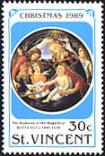
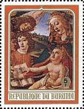
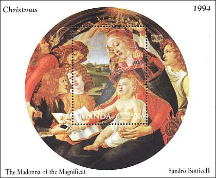
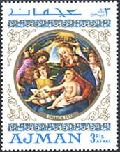
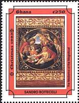
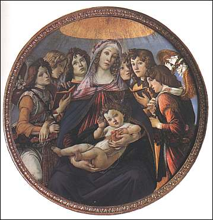
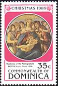
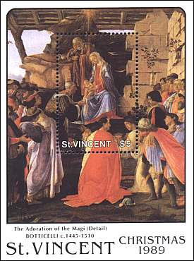
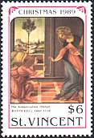
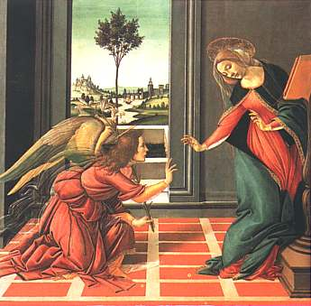

Offices Gallery, Florence. Sandro Boticelli.
← Recently Modernized Pages · Art Gallery · Home
Uffizi Gallery, Florence
Alessandro Botticelli
Religious Works
Halls 10-14. Alessandro Botticelli, The Madonna of the Magnificat, about 1482. We have here a masterpiece of religious art. The warm tones, the harmonious slide of lines and the enveloping organization of figures who come together around the Virgin are dominant in this picture. The "tondo" takes its name from the first word that appear in the open book where the Virgin prepares to write.
 |
 |
 |
 |
 |
Halls 10-14. Alessandro
Botticelli,
The Madonna of the Pomegranate, about 1482.
The
wonderful golden frame, decorated with lilies, hints of a public order. This
painting is one of best examples of the traditional religious production of
Botticelli; by being devoid of the dominating philosophical concepts, this has
assured him a great popularity.
Halls 10-14. Alessandro
Botticelli,
The Adoration of the Magi. This big composition was painted for the
Lami Chapel in Santa Maria Novella. This painting presents also a considerable
importance as a document, because it shows the portraits of numerous
personalities of that epoch. The author itself is presented on the right
(unfortunately not seen on the St. Vincent souvenir sheet).
 |
 |
 |
Halls 10-14. Alessandro Botticelli, The Annunciation, about 1490. This work was paint for the Cistercian church, found at Borgo Pinti, where today is the monastery Santa Maria Magdalena de' Pazzi. This is the period of the religious crisis of the artist, who turns to a mystical contemplation of the act of faith, to the mystery. It is the time when he started with the illustration of the Divine Comedy of Dante, where he accentuated some fantastic, almost visionary effects.
 |
 |
Please notice the elegance of the Virgin's posture when she is told by the Archangel about the great novelty that will change her life.